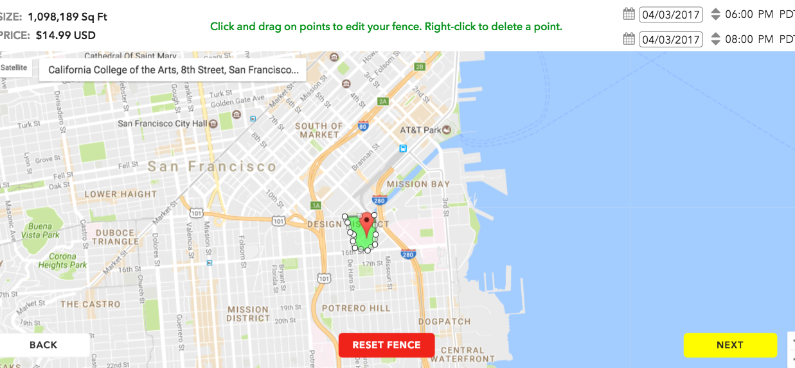
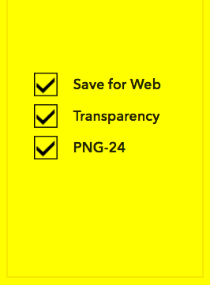
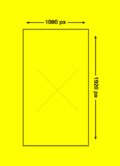
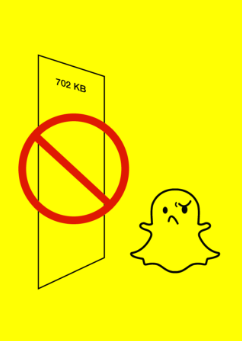

On-DEMAND Geofilters Steps:
1- Design:
Upload your own, or use one of our many templates to get started.2- Map:
Pick a time and set a geofence for your Geofilter.
3- Buy:
Submit your Geofilter and have it reviewed within one business day.
On this project i'm going to teach you how you can design your own filter on Snapcht and also make you play and use my own filters that I created for the class.
COMMUNITY: Artists and designers are encouraged to create and submit a free Community Geofilter for their city, university, a local landmark, or another public location. No brand logos allowed.
ON-DEMAND: Businesses and individuals alike can purchase On-Demand Geofilters for their event, business,or a specific location. Brand logos and trade-marks are permitted.
1- Please submit a web-optimized, transparent PNG.
2- PNG should have a width of 1080 pixels and a height of 1920 pixels.
3- PNG must be under 300 KB.
After doing all the above TIPS you can now click NEXT to submit your design and choose the locations
After doing all the above steps now you should wait for the approval.